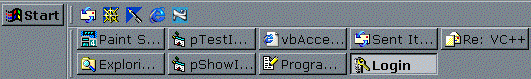

Show In Taskbar (29K)
Show In Taskbar (29K)
 21 Mar 2000
21 Mar 2000
First Posted
 Win32 Hooks in VB - The vbAccelerator Hook Library
Win32 Hooks in VB - The vbAccelerator Hook Library

Forcing Any Window to Show in the Taskbar
A technique for control freaks - making things happen like you want them to.
VB provides a ShowInTaskBar property for forms which is meant to set whether a form is shown in the Alt-Tab sequence and the shell's task bar. However there are two limitations to this:
- The property can't be set at run-time.
- Erm, it doesn't work anyway.
Ok, it can work, but only when your form has certain styles. If your form is modal, there is nothing you can do to put it into the task bar. This article provides some code to force any type of window into the taskbar.
ShowInTaskBar from a Windows Perspective
The problem with affecting built-in behaviours in Windows is that they are not well documented and sometimes troubling to use. The logic to put a window into the task bar can be dug out from MSDN although you have to search the Knowledge Base to find the answer:
"When you create a window, the taskbar examines the window's extended style to see if either the WS_EX_APPWINDOW (&H40000) or WS_EX_TOOLWINDOW (&H80) style is turned on. If WS_EX_APPWINDOW is turned on, the taskbar shows a button for the window, and if WS_EX_ TOOLWINDOW is turned on, the taskbar does not show a button for the window. A window should never have both of these extended styles. If the window doesn't have either of these styles, the taskbar decides to create a button if the window is unowned and does not create a button if the window is owned."
Incidentally, you use the GetWindow API function with the GW_OWNER flag to determine whether a window is owned.
However, this doesn't acknowledge the fact that the only time the taskbar seems to check the styles is when the window is first created. If you create a dialog without these styles, then no matter what you do to change the styles afterwards, nothing happens.
You can Take Control
VB's interface into the window creation procedure is somewhat lacking. You get a Form_Initialise event when your form object is about to be created, followed by a Form_Load event when the form is about to be shown on screen. Form_Initialise is of no use here because it is in effect an event fired when the object is constructed, so although the object has just come into life, and hence you can use local variables, the associated UI elements have not yet been created. Therefore you may not refer to any windows or controls at this stage. Form_Load is no use either because this fires after the window has been created and is about to be shown. It would have been nice to get some more intermediate events, but I suppose this is the price to pay for having an easy to use interface.
So, given that there is no VB hook into the point when the window is created, how else might you detect window creation?
The Windows Hook to the rescue
When all other things have failed, a Windows Hook is often a good thing to consider. Windows Hooks allow you to get into the message stream for your app before the messages get sent to it - and allows you to change or otherwise subvert the standard processing.
By installing a hook of type WH_CALLWNDPROC during an _Initialise event, your app can be notified of any attempts by Windows to call a Window Procedure. This allows us to capture the crucial WM_CREATE message which is sent when the window is first created.
In Code - The Theory
The first thing to do is to install a windows hook before any windows get created and start watching for WM_CREATE calls. The _Initialise event of Forms, UserControls and so on always fires before any windows have been created, whilst all other events fire after the windows have been created, so this is a good place as any to install the hook for window creation checking (note that the _Initialise event only fires once for a form object, so if you want this to work correctly you will always need a new instance of a form). Here is how to initiate the hook:
Public Sub HookAttach()
m_hHook = SetWindowsHookEx( _
WH_CALLWNDPROC,
AddressOf AppHook,
App.hInstance,
App.ThreadID)
Debug.Assert m_hHook <> 0
End Sub
Now whenever any window in your application has its Window Procedure called, the hook will fire your AppHook procedure. You can then check whether the call is a WM_CREATE message and also you can isolate the particular window being created:
Private Function AppHook( _
ByVal idHook As Long, _
ByVal wParam As Long, _
ByVal lParam As Long _
) As Long
Dim CWP As CWPSTRUCT
Dim k As Long, aClass As String
If idHook >= 0 Then
CopyMemory CWP, ByVal lParam, Len(CWP)
Select Case CWP.message
Case WM_CREATE
aClass = Space$(128)
k = GetClassName(CWP.hwnd, ByVal aClass, 128)
aClass = Left$(aClass, k)
If IsIn(aClass, C_MDIFORMCLASS_IDE, C_MDIFORMCLASS_EXE, C_MDIFORMCLASS5_IDE, _
C_MDIFORMCLASS5_EXE, C_FORMCLASS_IDE_DC, C_FORMCLASS_EXE_DC, C_FORMCLASS_IDE, _
C_FORMCLASS_EXE, C_FORMCLASS5_IDE, C_FORMCLASS5_EXE) Then
m_lHookWndProc = SetWindowLong(CWP.hwnd, GWL_WNDPROC, AddressOf Form_WndProc)
End If
End Select
End If
AppHook = CallNextHookEx(m_hHook, idHook, wParam, ByVal lParam)
End Function
The constants listed above specify all the various class names that VB gives to a form for VB5 and VB6 - and there's a lot of them! (Thanks to Geoff Glaze for his assistance with this):
Private Const C_MDIFORMCLASS_IDE = "ThunderMDIForm" Private Const C_MDIFORMCLASS_EXE = "ThunderRT6MDIForm" Private Const C_MDIFORMCLASS5_IDE = "ThunderMDIForm" Private Const C_MDIFORMCLASS5_EXE = "ThunderRT5MDIForm" Private Const C_FORMCLASS_IDE_DC = "ThunderFormDC" Private Const C_FORMCLASS_EXE_DC = "ThunderRT6FormDC" Private Const C_FORMCLASS_IDE = "ThunderForm" Private Const C_FORMCLASS_EXE = "ThunderRT6Form" Private Const C_FORMCLASS5_IDE = "ThunderForm" Private Const C_FORMCLASS5_EXE = "ThunderRT5Form"
You will see that in the above function, I set a new Window Procedure to subclass the window in response to the WM_CREATE message. Why?
Well, there is a problem with calling code in response to WH_CALLWNDPROC events. If you do anything during a WH_CALLWNDPROC hook notification which would call the window procedure of that window again, then VB crashes. This rules out a lot - for example, you can't change the style of the window, and so forth. To get around this problem, you can use the hook notification to install a temporary subclass on the window to capture exactly the same message again - and then you can make as many modifications as you wish.
So finally I respond to the WM_CREATE message in a subclass procedure. As you will see, I just change the Extended Style of the form using SetWindowLong and by modifying the Window's creation data, plus I know I no longer need the subclass so I can reinstall the original window procedure:
Private Function Form_WndProc( _
ByVal hwnd As Long, _
ByVal Msg As Long, _
ByVal wParam As Long, _
ByVal lParam As Long _
) As Long
Dim lSetStyleEX As Long
' SPM - specific wnd proc for a form.
' Only called once for the WM_CREATE message.
Select Case Msg
Case WM_CREATE
Dim tCS As CREATESTRUCT
CopyMemory tCS, ByVal lParam, Len(tCS)
lSetStyleEX = GetWindowLong(hwnd, GWL_EXSTYLE)
lSetStyleEX = lSetStyleEX Or WS_EX_APPWINDOW
lSetStyleEX = lSetStyleEX And (Not WS_EX_TOOLWINDOW)
tCS.ExStyle = lSetStyleEX
CopyMemory ByVal lParam, tCS, Len(tCS)
SetWindowLong hwnd, GWL_WNDPROC, m_lHookWndProc
SetWindowLong hwnd, GWL_EXSTYLE, tCS.ExStyle
End Select
Form_WndProc = CallWindowProc( _
m_lHookWndProc, hwnd, Msg, wParam, lParam)
End Function
In Code - In Practice
In the download sample the code is all wrapped up into a single module, modStyles. All you have to do to make this work is call HookAttach from the Form_Initialise event and then call HookDetach sometime later (I use the Form_Load event because I know this fires after the window has been created).
Note that it isn't crucial to do things like this. You can attach the hook whenever you want and detach it whenever you want as well. Try to minimise the duration of the Hook's effect, though, as this will make life easier in terms of IDE stability.
There are a whole load of other possible uses of this code. Matt Hart has demonstrated how you can use this technique to modify the style of a VB control as it is created, for example, to create an Owner Draw Combo Box and an Owner Draw Tab. Have fun!